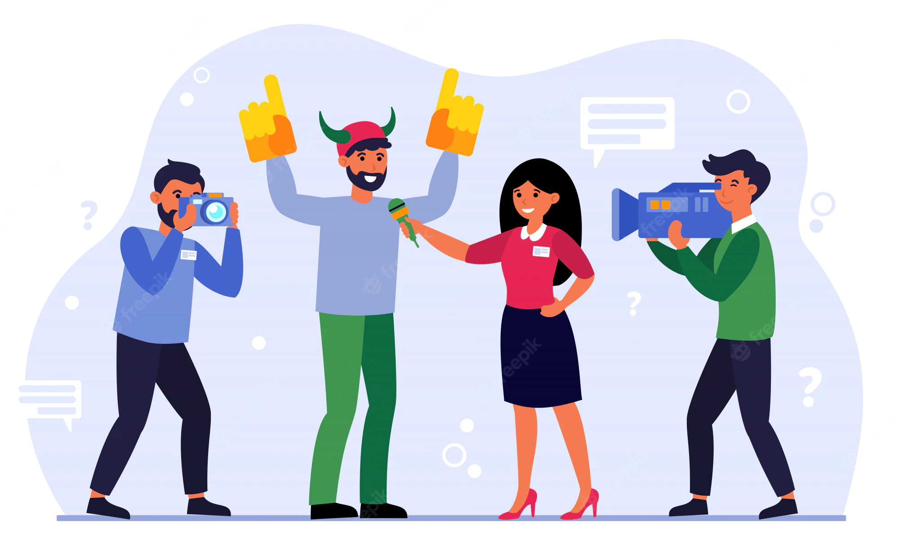

Are We the Most Connected or the Most Isolated Generation?
In the digital era, young people spend countless hours on social media, raising the question of real social isolation.

Are Influencers Replacing Journalists?
Influencers spread information quickly, but can they really replace reliable, investigative journalism?
The Future of Work in the Age of Automation
Automation is reshaping the professional world, requiring new skills and adaptability for rapid change.

Digital Minimalism: Living Better with Less Screen Time
Millions are embracing digital minimalism — a lifestyle focused on intentional, mindful technology use.